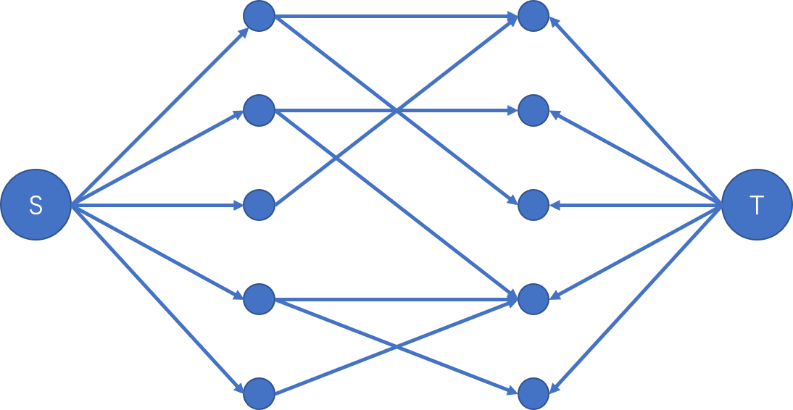
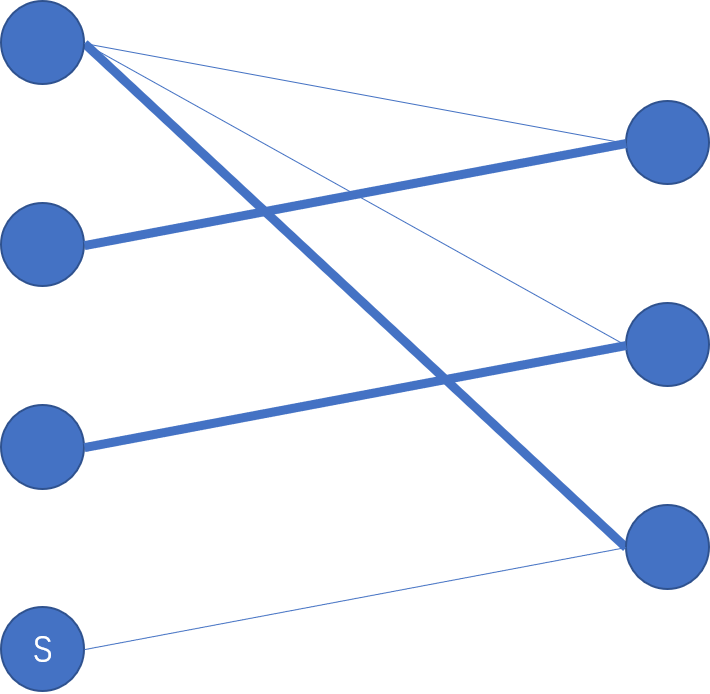

二分图复习笔记。二分图，有趣而又性质多。可以用在多种建模上。
二分图的基础知识
二分图，又称二部图，定义为 $G=< V_1,V_2,E >$，其中 $E\subseteq V_1\times V_2$。用人话说就是分成两个集合，集合内部不连边，只有两个集合之间有边相连，集合内部没有边。
二分图有一个重要性质：二分图中不包含奇环，即长度为奇数的环。这个是充要的。如果任意一个图不包含奇环，那么一定可以表示为二分图的形式。
二分图判定
可以直接使用染色法。对每个节点依次染色，保证相邻节点不同色。如果遇到违反这一条性质的染色方法，那么可以得出结论：这个图不是二分图。正确性基于上述性质。
1 | bool Bfs(int s){ |
二分图的最大匹配
定义图 $G=< V,E >$ 的一个匹配 $M$ 为 $M\subseteq E$ 且对于 $M$ 中的元素没有公共点。二分图的匹配就是在二分图中的匹配。其最大匹配为 $|M|$ 最大的一组匹配。求解最大匹配有增广路算法与最大流两种方法。
增广路算法
一些定义
匹配边 指的是在匹配中的边，非匹配边 就是不在匹配中的边。
在匹配中的点为 匹配点，不在匹配中的点为 未盖点。
一条图中的简单路径被称为 增广路 当且仅当路径两端为未盖点且路径中匹配边非匹配边交替出现。
如果路径只满足后面一个条件则称其为 交替路。
现在分析一下增广路的性质。
对于图中的一条增广路，将上面的边的匹配情况取反，那么可以知道匹配数会增加。至于原因，由于增广路上的点数为偶数个，从第二个点开始有匹配，那么让第一个点与第二个点匹配，以此类推可知原来由匹配的点现在也有匹配，而倒数第二个点与倒数第一个点匹配，原来没有匹配的头尾两个点都有匹配，所以匹配数会加一。
对于图 $G$ ，有如下定理。
对于一个匹配 $M$ 来说，若 $G$ 中不存在增广路，那么 $M$ 为图 $G$ 的一个最大匹配。反之亦然成立。
尝试证明一下。首先，$M$ 是最大匹配，那么显然不存在增广路，否则按照这条增广路增广就可以是匹配数增加，推出 $M$ 不为最大匹配。若 $G$ 中不存在增广路，设存在一个更大的匹配 $M’$ ，令 $D=M\oplus M’$ 即取集合的对称差/异或，可知 $D$ 中的边由若干的链与环构成，且链与环上为 $M$ 与 $M’$ 的边交错出现。又因为 $|M’|>|M|$ ，所以一定存在一条链使得上面 $M’$ 中的边大于 $M$ 中的边，那么这条路径对于 $M$ 来说就是一条增广路，与 $M$ 无增广路矛盾。故原命题正确。
这样就有一个简单的做法，枚举每个点未盖点寻找增广路，直到找不到增广路，此时的匹配就是最大匹配。实际上每个点只需要找一次增广路就可以达到一样的效果。有如下定理
从一个点出发如果没有找到增广路，那么无论增广多少次都无法找到增广路。
简单证明：假设第一次从 $x$ 出发没有找到增广路，经过 $a-b$ 这条增广路后出现了从 $x$ 出发的增广路 $P_x$ ，可知 $P_x$ 一定和 $a-b$ 有交，又因为 $a-b$ 为一条增广路增广后的路径，可知交点处的两边不为同一类型，故 $x$ 在 $a-b$ 增广之前就可以到达 $a,b$ 中的一个点，那么第一次就应该有增广路，矛盾。
由此可以从每个未盖点找一次增广路。
注意，上面的结论适用于任意图。
具体思路与过程
现在所有的问题都集中在寻找增广路上。在二分图中有什么特殊的性质？那自然是不存在奇环。又因为增广路只可能是点数为偶数的路径，此时对于二分图的两个点集 $V_1$ 与 $V_2$ ，如果从左部点找增广路，那么一定找到的是右边的点。此时给这个二分图 定向 ，令非匹配边从左到右，匹配边从右到左定向，那么原问题就等价于从左侧能否到一条右侧的路径，这个问题可以用DFS解决。
枚举左部未盖点，进行DFS，打个 vis 标记，保证每个点至多访问一次。每次找增广路最多遍历整张图一遍，所以时间复杂度为 $O(m)$ 。又要枚举未盖点，故总时间复杂度为 $O(nm)$ 。
实现上有更简单的写法。
最大流
二分图的最大匹配问题也可以对该图建出网络流图后跑最大流解决。
具体形如下图。

新建源汇，源点向左部节点连容量为 $1$ 的边，原图中的边从左到右连容量为 $1$ 边，右部节点向汇点连容量为 $1$ 的边。这些都是为了保证每个点最多只有一个匹配点。这个算法本质与增广路算法是类似的，考虑网络流中增广后的反向边即是上述定向后的匹配边。所以正确性也容易得出。
如果用 Dinic 算法实现最大流，那么总复杂度为 $O(m\sqrt{n})$。简单证明：对于Dinic的多路增广的部分时间复杂度为 $O(m)$ 。在 $\sqrt{n}$ 次增广后，由于每次增广后有源汇最短路严格递增，故现在图中的增广路至少为 $\sqrt{n}$ 。设 $M$ 是现在的匹配，$M’$ 为最大匹配，考虑它们的对称差，这里面是由交替环与交替链构成，每条链对应这一条增广路，故链长长度不小于 $\sqrt{n}$ ，故最多还有 $O(n/\sqrt{n})=O(\sqrt{n})$ 条增广路，也就是说还会最多增广 $\sqrt{n}$ 次，所以复杂度为 $O(m\sqrt{n})$。
二分图匹配模型的建立
主要考虑 $0$ 要素与 $1$ 要素。对象要求能划分成两个集合，集合内部无边相连，每个点只能匹配一个点。
在棋盘上的运用更多的是对棋盘进行黑白染色，划分集合，适用于对格子之间的限制且黑白格子之间互补影响。也可以对棋盘的行列作为左右节点，适用于对行列的限制。
二分图的最大权匹配
二分图最大权匹配问题是要求权值最大的匹配，对匹配数不做要求。
KM算法
KM算法适用于最大权匹配是完备匹配的问题，也就是强制有完备匹配，故假设两部的点数为 $n$。
如果用KM算法解决最大权匹配，两边补足点数后无边的点之间连 $0$ 边。
一些定义
可行顶标 是给每个点分配一个权值 $val(i)$ ，对于任意一条边 $(u,v)$ ，该权值必须满足
相等子图 是在分配可行顶标后由原图的点集以及满足 $val(u)+val(v)=w(u,v)$ 的边 $(u,v)$ 组成的。
可以知道这样一个事实，若在原图的相等子图中若存在完备匹配，则原图的最佳匹配就是该完备匹配的边权和。
简单证明：对于相等子图的匹配 $M$ 的边权和为$\sum_{(u,v)\in M}w(u,v)=\sum_{(u,v\in M)}val(u)+val(v)$ 又由于是完备匹配，则其为顶标之和，又因为对于任意的边 $(u,v)$ ，满足 $val(u)+val(v)\ge w(u,v)$，所以这个匹配时最大的。
具体过程
KM算法的思想就是基于上述定理。一开始给所有点分配一个可行顶标，再通过不断调整顶标，使得相等子图中存在完备匹配。设左部第 $i$ 个点的顶标为 $val_x(i)$ ，右部第 $i$ 个点的顶标为 $val_y(i)$，$w(i,j)$ 为左部第 $i$ 个点与右边第$j$个点之间的边权。一开始可以令 $val_x(i)=\max\{w(i,j)|1\le j\le n\}$，$val_y(i)=0$，这一定是一组可行顶标。
然后可以在相等子图中愉快的跑增广路算法。如果存在增广路，则直接增广；否则就需要对顶标做些手脚了。
若从左部 $i$ 开始在相等子图中不存在一条增广路，那么最终遍历到的一定是一条所谓交错树的东西，即非匹配边、匹配边依次经过的DFS树，如下图，加粗的边为匹配边，从S出发的交错树。

所以交错树不一定是链。此时需要将顶标做变动，使得存在增广路，让左部所有在交错树中的点的顶标减去一个值，右部所有在交错树中的点的顶标加上同一个值。可以知道这样做交错树中的边不会消失，反而会加入新的可能可以增广的边，从交错树中左部到不在交错树中的右部；而对于交错树外的边，是不会有任何影响的，因为匹配点都在交错树内。设交错树内左部点集合为 $A$ ，右部为 $B$ ，不在交错树内的左部点集为 $A’$，右部为 $B’$ 怎么选取这个变化量 $\Delta$ ？可知
加入边之后再检查是否有增广路。由于每次更改至少会有一组点加入，所以这部分最高的复杂度为 $O(n)$ ，本质是在扩展交错树。朴素实现是 $O(n^4)$ 的，每次花 $O(n^2)$ 的时间寻找 $delta$ 。可以对右部节点，维护一个 $slack$
这样就只需要 $O(n)$ 的时间找 $delta$ 。总时间复杂度为 $O(n^3)$。至于正确性，就是基于一开始的定理。
一些扩展
如果要求最小权匹配，将边权取反后用KM算法后再取反即可。
对于最大权匹配来说，观察KM算法中的两个模型：最大权匹配与顶标模型。
注意到在交错树中左部节点一定比右部节点多，所以可以整个顶标和是在不断减小的。而在最大权匹配中，可以证明最终的可行顶标和是最小的。最大权匹配与最小顶标和其实是一个对偶问题。将最大权匹配描述为一个线性规划问题：
其中 $w_{u,v}$ 表示 $u,v$ 之间的边权，$d_{u,v}$ 为变量，表示 $u,v$ 是否匹配，对应的约束条件即是每个点最多匹配一个点。
而它的对偶线性规划即为：
而后者就是最小顶标和的线性规划式。有时遇到后者也要想到用二分图最大权匹配解决。
费用流
费用流解决最大匹配下的最大权匹配，可以新建源汇点，构建网络流图：
$S$ 连出去的边容量为 $1$ 费用为 $0$，中间的边容量为 $1$ 费用为对应的边权，连到 $T$ 的边容量为 $1$ 费用为 $0$。这个网络的最大费用最大流就是最大匹配下的最大权匹配，即最佳匹配。
如果只是单纯的求最大权匹配，那么求最大费用可行流，即费用为负就不增广了。
二分图匹配的扩展
二分图最小点覆盖
一个图 $G$ 的点覆盖集 $S$ 定义为一个点集且满足任意一条图中边都至少有一个点集中。形象化的理解就是点集 $S$ 中的点覆盖图中的所有边。若 $|S|$ 最小，则称 $S$ 为图 $G$ 的最小点覆盖集。
任意图的最小点覆盖是一个NP问题，有一个可以求出近似解的混合贪婪算法。但是在二分图中可以很好的解决。
有König定理：
二分图的最小点覆盖集的大小为该图的最大匹配数。
尝试证明：因为有 $M$ 中的边存在，覆盖这些边需要 $|M|$ 个点，所以 $|S|\ge |M|$。现在给出一种构造满足 $|S|=|M|$ 即可证明定理。对图该图求出其最大匹配 $M$ ，之后从左部未盖点执行增广，将访问过的点进行标记，那么取左侧未被标记的点，右侧被标记的点作为覆盖集中的点，可以断言这些点构成最小点覆盖。首先，左部未盖点被标记，右部未盖点一定没有被标记，一对匹配点只可能同时被标记或同时没有被标记（左部匹配点只能从右部匹配点到达），所以可知一对匹配边最多选出一个点，故 $S$ 的大小为 $|M|$ 。其次，对于匹配边，一定被覆盖到，非匹配边中，不存在左边未匹配，右边未匹配的情况，对于左边为匹配点右边为未盖点，左边匹配点是一定没有被标记，否则就会有一条增广路；对于右边为匹配点嘴边为未盖点，由于从左边未盖点出发，所以右边匹配点一定被标记，故可以知道选出来的点覆盖了所有的边。
（似乎也可以从网络流的角度证明）
二分图最小点覆盖模型的特点就是每个物品有两种选择，两种必定选择其一。
二分图最大独立集
图 $G$ 的独立集为一个点集 $S$ 满足其中的点没有边相邻。$|S|$ 最大的称为图 $G$ 的最大独立集。最大团为其中的一个最大子完全图。
有如下定理
图的最大团的补图的最大独立集
同样，一般图的最大团、最大独立集都是NP问题，在二分图这种特殊的图中有很好的解决方式。
有定理
对于二分图 $G$ ，它的最大独立集为总点数减去最大匹配数。
证明：选取最多点使得没有边连等价于在图中去掉最少的点使得剩下的点没有边相连，等价于选取最少的点覆盖所有的边，即在图中去除最小点覆盖集就是最大独立集。又因为最小点覆盖大小等于最大匹配数，故最大独立集为总点数减去最大匹配数。
二分图最大独立集模型一般运用于棋盘中，或者无奇环的图中且满足连边为矛盾关系，只能取一个。
最经典的应用：棋盘放马。
二分图带权点覆盖与独立集
在一个带正点权二分图中，覆盖集的权值与独立集的权值为里面的点权之和。
不能直接运用二分图匹配的方法，需借用网络流的方法。
对于最小带权点覆盖集，如下构图：
新建源汇，源点向左部节点连容量为对应权值的边，二分图内部的边连无穷权值，右部节点向汇点连容量为对应权值的边。
至于正确性的理解，对于一条边，两边的点必须至少选择一个，那么在图中表示为这条从源点到汇点的路径必须至少割掉一条边，又因为中间是无穷边，无法割掉，那么自然会去割在两侧的边，而两侧的边对应着原来的两个点，故等价于必须去掉一个点，所以一个割对应这一个覆盖集，那么这个网络的最小割就是最小带权点覆盖。复杂度为求解网络流复杂度。
对于最大带权独立集，由于独立集与覆盖集互补，所以最大带权独立集就等于总权值减去最小带权点覆盖集。复杂度为求解网络流复杂度。